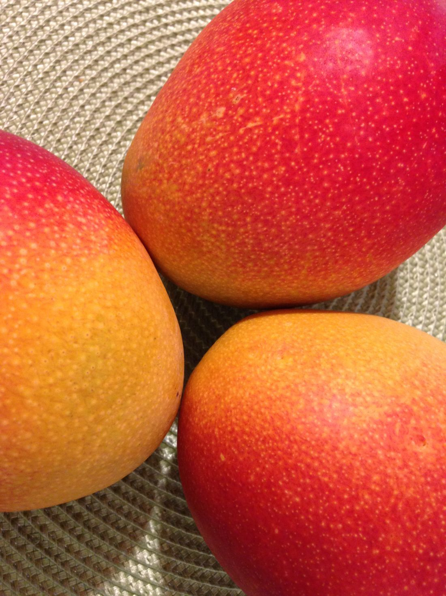
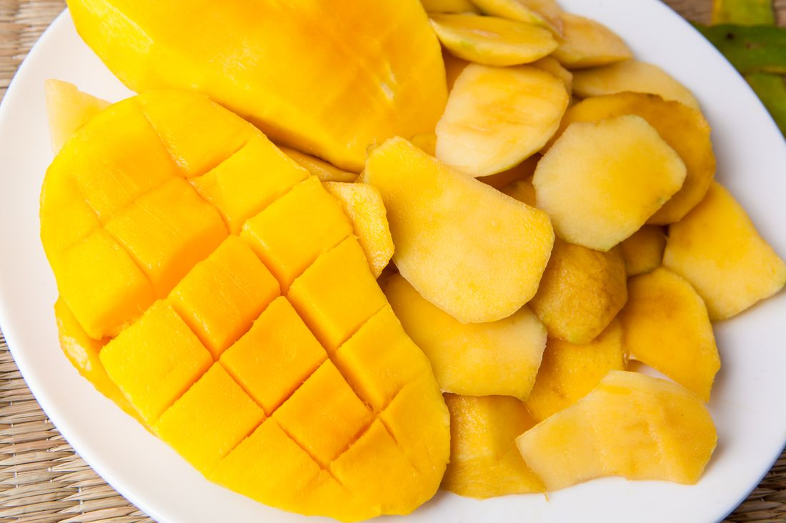
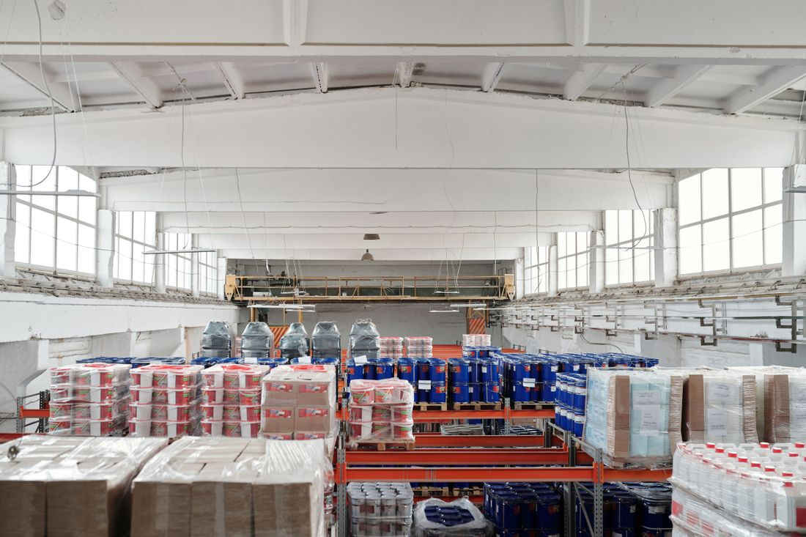

من تربة الطمي الغريني في وادي سهام وزبيد إلى رفوف المتاجر الراقية في الخليج وأوروبا؛ محصول مانجو يقطف عند النضج الفسيولوجي ويُبرّد مسبقاً خلال 6 ساعات تحت معيار UNECE FFV-45 Class I.
HARVEST GRADE I18°–23° Brix
فحص مخبري معتمد لكل دفعة


WADI SIHAM & ZABID
محطة الفرز والتعبئة المبرّدة — محافظة الحديدة
ORIGIN TERROIR & HERITAGE
جغرافيا التميز: لماذا يتفوق مانجو وادي سهام وزبيد؟
تمنح الوديان التهامية الممتدة من سفوح الجبال نحو ساحل البحر الأحمر مزيجاً نادراً لا يتكرر في مناطق الإنتاج الأخرى: تربة طميية خصبة، رطوبة بحرية معتدلة، وساعات سطوع شمسي مثالية ترفع تركيز السكريات الطبيعية (Brix) دون الإخلال بصلابة القشرة.
توازن مناخي استوائي
مياه السيول الموسمية في وادي سهام وزبيد تغذي الأشجار بمعادن طبيعية تمنح اللب قواماً كريمياً خالياً من الألياف.
اعتماد المادة الجافة (≥ 15%)
لا يُسمح بالقطف قبل اجتياز عينات الحقل فحص المادة الجافة والانكسار الضوئي لضمان نضج متجانس بعد الشحن.
تتبّع كامل للحوض الزراعي
كل كرتون يحمل رمز الدفعة (Batch ID) المرتبط بالمزرعة وتاريخ القطف وشهادة MRL للخلو من متبقيات المبيدات.
CURATED EXPORT PORTFOLIO & INDICATIVE FOB RATES
الأصناف التصديرية وتسعيرة التصدير الفورية
بدّل العملة لاستعراض الأسعار الاسترشادية (FOB الحديدة) للكيلو وللكرتون التصديري، أو افتح بطاقة الفحص المخبري الكاملة لكل صنف.
عملة التسعير الاسترشادي (FOB):
SEASONAL HARVEST MATRIX
مصفوفة الحصاد والتصدير (12 شهراً)
خطط عقود التوريد السنوية باستخدام الفلتر الربعي لاستعراض أشهر الذروة والتوافر المحدود لكل صنف.
ذروة التصدير (كميات حاويات كاملة) بداية / نهاية الموسم (كميات محدودة) خارج الموسم
COLD CHAIN & EXPORT PACKAGING
بروتوكول التبريد المسبق ومعايير التعبئة الدولية
سلسلة تبريد محكمة من البستان إلى ميناء الوصول مع خيارات تغليف معتمدة لخطوط الطيران والحاويات المبرّدة.
10°–12°C Reefer Lock + Data Logger

مناولة معتمدة للشحن الجوي والبحري
DIRECT B2B CONTRACT DESK · PRO TIER
اطلب تسعيرة تصديرية مخصصة (شحن جوي / بحري)
يُعدّ مكتب التصدير في الحديدة عرض السعر الرسمي (FOB / CIF / Air Freight) مرفقاً بجدول التسليم وتقارير الجودة المخبرية خلال أقل من 4 ساعات عمل.
ملخص التسعيرة التقديري المباشرUSD $
اختر الصنف والكمية لمشاهدة التقدير الأولي للشحنة قبل الإرسال إلى واتساب التصدير.